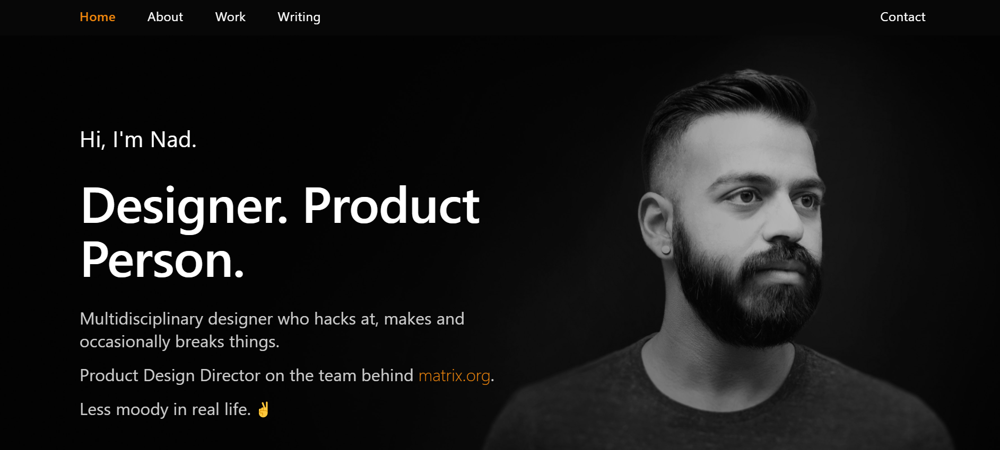
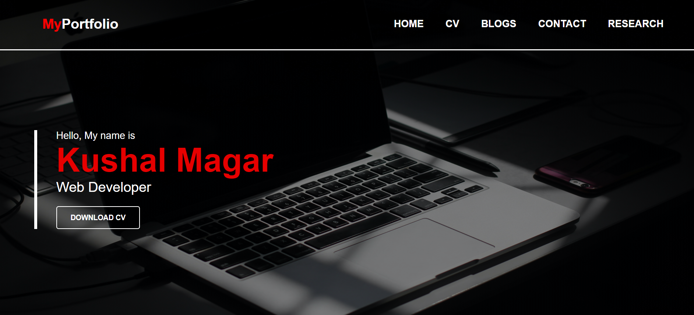
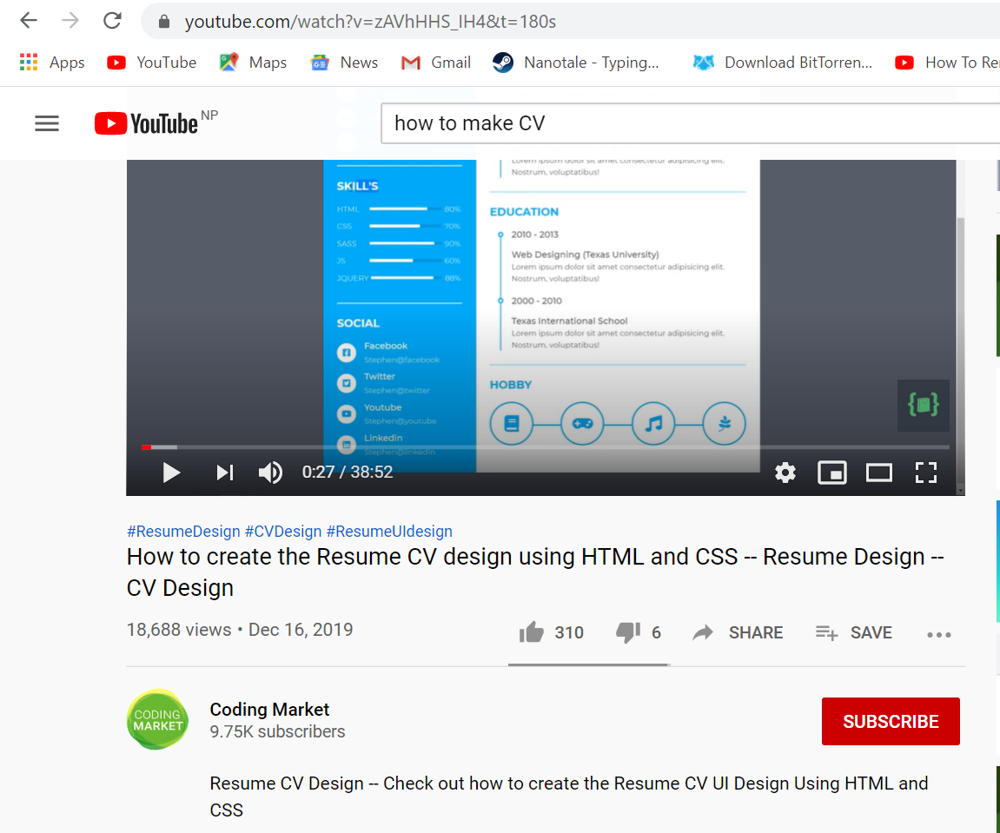
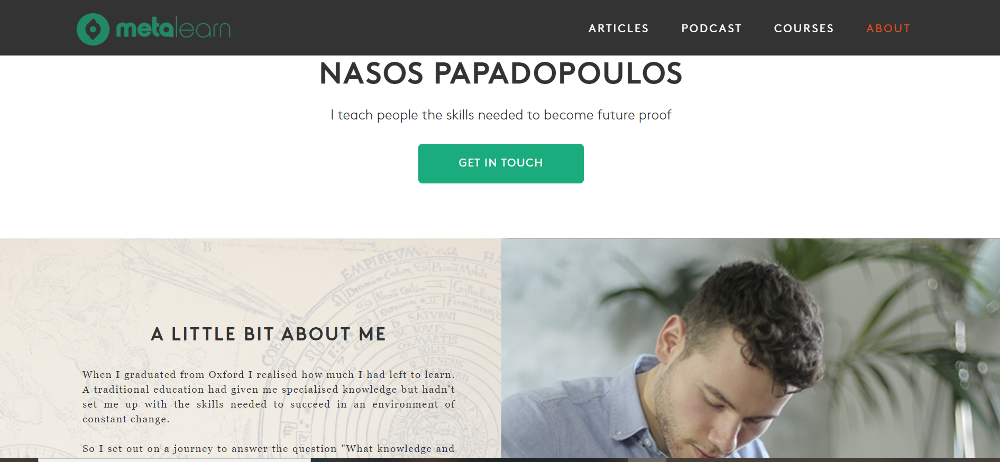
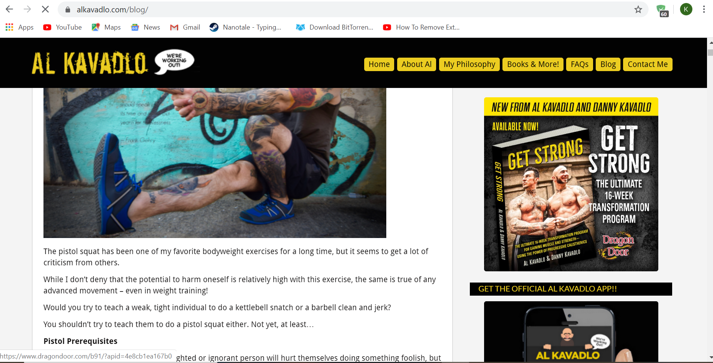
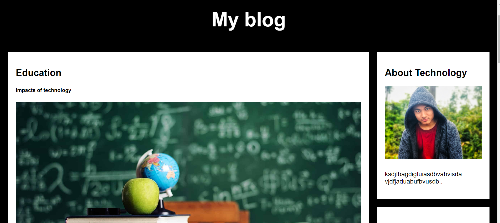
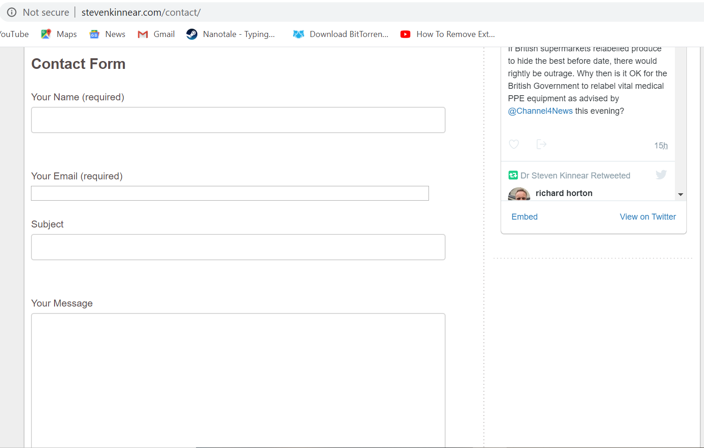
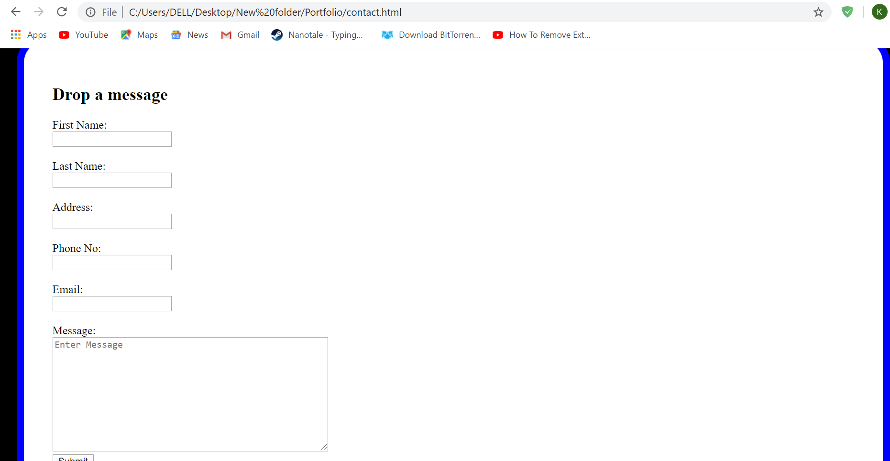

| Personal Portfolio Of NED | Home Page |
|---|---|
|

The personal portfolio of NED has black and white theme in his home page.
He has also introduced a bit in the body section. I found this to be very classic |

I liked his concept of using black and white color only in his home page. So i also did the same with my home page. |
| Coding Market Youtube | My CV |
|---|---|
|

I saw how Coding Market used some icons and text to make curriculum vita in Youtube. He made two left and right section for icons illustrations and text section. |
I used my pictures and some icons to show my photo and skills as well as my social media profiles in the left section. I used right section for the texts to define my academic qualificaitions and hobby. |
| Meta Learn | Download Button |
|---|---|
|

I liked how a button called "Get in touch" was used in this home page. |
I liked the idea of putting the button in home page so i also put the button called "Download CV" in my home page too. |
| Al kavadlo | Blogs |
|---|---|
|

I saw how big pictures and some texts were used in the left side occupying larger area and some small pictures and short texts in the right side containing samll area. |

I used larger pictures and more texts in the left side to explain different impacts of technology in our daily life. I used smaller pictures and less texts in the right side. |
| Steven Kinnear | Contact form |
|---|---|
|

Steven has used contact form to get in touch with him and and a message box to send him message and lastly a button in the end to send. |

I liked the idea so i also tried adding some more input area and a submit button . |